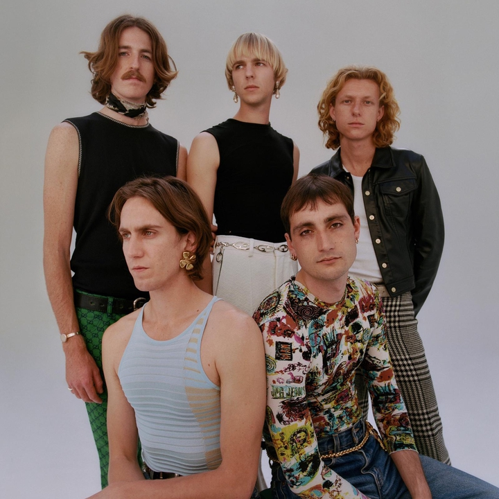
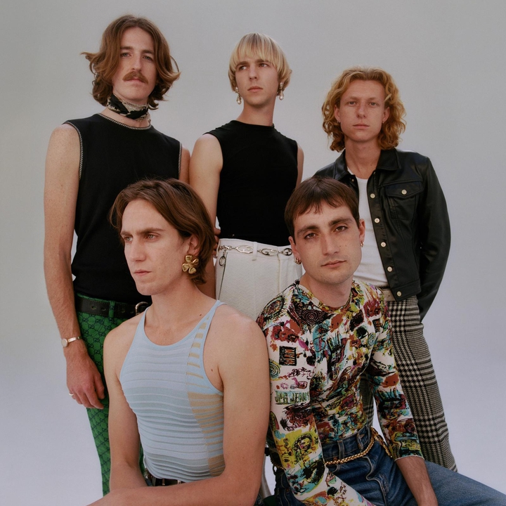

Inicio
Sumérgete en un mundo lleno de información y novedades sobre tus artistas favoritos. Desde noticias emocionantes sobre sus nuevos lanzamientos hasta reseñas detalladas y artículos profundos que exploran su arte y su impacto en la industria musical. Además, accede a entrevistas exclusivas donde los artistas comparten sus pensamientos, inspiraciones y experiencias. Y no te pierdas la oportunidad de participar en nuestros foros de discusión, donde puedes conectar con otros fans apasionados y compartir tus opiniones, ideas y descubrimientos musicales.


 
